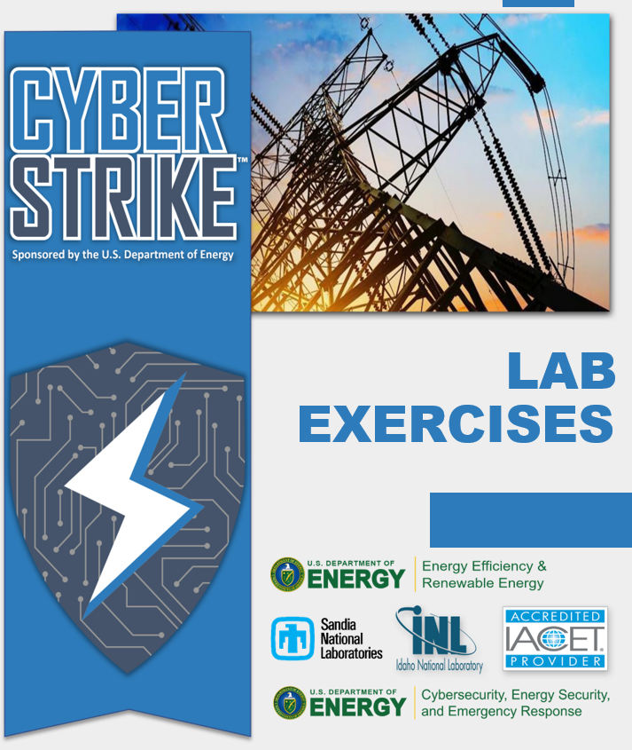

Welcome to the CyberStrike Lab Workbook¶

Introduction¶
These labs have been developed to mimic a real-world scenario in which a single-axis, utility-scale photovoltaic system is generating power. A simulated distributed energy resource inverter is included with has SunSpec Modbus and IEEE 2030.5 communication interfaces. The single-axis tracking system includes a Modbus control system. Site perimeter defenses are not included but can be subverted through several means.
The labs listed below will walk through various exercises to demonstrate how an attacker can gather information, use that information to identify vulnerabilities or gather additional sensitive information, interrupt/control the process, and finally how proactive measures can prevent such attacks.
The cybersecurity labs are based on several open-source reports and resources including:
- 2015 and 2016 Ukraine cyber events 1 2
- DEF CON talk on solar gateway hacking 3
- Sandia and INL pen testing experience with DER and solar equipment 4
- sPower Attack –Vulnerable router targeted at national firm. 5
- Known solar vulnerabilities
Labs¶
Lab 1: Open-Source Intelligence (OSINT)
Lab 2: Exploiting DER Interfaces
Lab 3: DER Firmware and Cryptography
Lab 4: Denial of Service (DoS)
Lab 5: Web Exploitation
Lab 6: Vulnerable API and Smart Phone App Security
Lab 7: Replay and Machine-in-the-Middle (MITM) Attacks
Lab 8: Preventing Attacks via Encryption and Firewall Rules
The labs require a substantial amount of time, so please work with your instructor to determine which of the labs should be completed in your class. Here are some lab suggestions based Distributed Energy Resource (DER) ecosystem roles:
| Who | Time | Lab 1 | Lab 2 | Lab 3A | Lab 3B | Lab 4 | Lab 5 | Lab 6 | Lab 7 | Lab 8 |
|---|---|---|---|---|---|---|---|---|---|---|
| Reconn | DER Interfaces | Crypto | Code Signing | DoS Attack | Web Exploits | APIs + Apps | Reply/MitM | Security Improvements | ||
| 25 min | 15 min | 35 min | 25 min | 30 min | 30 min | 60 min | 45 min | 40 min | ||
| Government | 3h5m | X | X | X | X | X | X | |||
| Utility | 2h45m | X | X | X | X | X | X | |||
| DER Vendor | 3h55m | X | X | X | X | X | X | X | ||
| DER Aggregator/Operator | 3h5m | X | X | X | X | X | X | |||
| C-Suite, e.g., CEO, CFO, CISO | 3h5m | X | X | X | X | X | X | |||
| Online Students | 4h50m | X | X | X | X | X | X | X | X | X |
Usage¶
Use the links on the left to navigate to the desired exercise.
-
https://www.wired.com/2016/03/inside-cunning-unprecedented-hack-ukraines-power-grid/ ↩
-
https://www.wired.com/story/russian-hackers-attack-ukraine/ ↩
-
Fred Bret-Mounet, “All Your Solar Panels are belong to Me,” DEF CON, August 4–7, 2016. ↩
-
C. Carter, I. Onunkwo, P. Cordeiro, J. Johnson, “Cyber Security Assessments of Distributed Energy Resources,” IEEE PVSC, Washington, DC, 25-30 Jun 2017. ↩
-
https://www.cyberscoop.com/spower-power-grid-cyberattack-foia/ ↩
-
https://www.cisa.gov/uscert/ics/advisories/icsa-19-281-01 https://www.cisa.gov/uscert/ics/advisories/ICSA-15-181-02A ↩